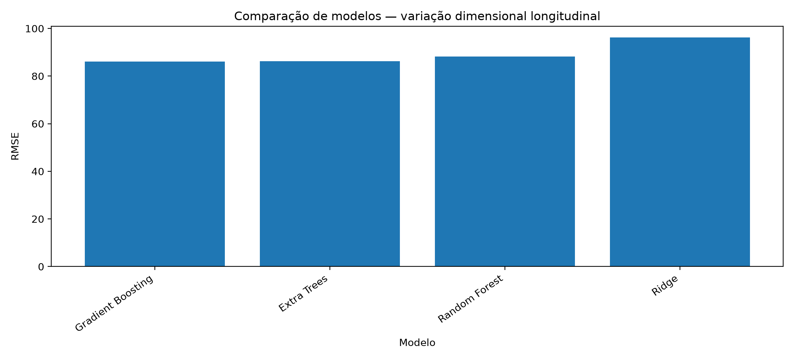

Resultados
Resultados consolidados
A comparação mostra que o desempenho depende da métrica considerada e que a interpretação longitudinal exige observar tanto magnitude quanto sinal da deformação.
Comparação global de modelos
| MAE | RMSE | R2 | acuracia_sinal | modelo | MAE_cv_medio | MAE_cv_desvio | RMSE_cv_medio | RMSE_cv_desvio | R2_cv_medio | R2_cv_desvio |
|---|---|---|---|---|---|---|---|---|---|---|
| 48.32250793628296 | 86.0959466394375 | 0.7917660921433463 | 0.8030407740152039 | Gradient Boosting | 48.328470634670595 | 5.813302641687019 | 84.06134550400066 | 18.696831625712008 | 0.7931329631292433 | 0.07660255037858223 |
| 48.440019879912754 | 86.23195418780527 | 0.7911076696661319 | 0.8838977194194886 | Extra Trees | 48.44605392274129 | 5.328860877540963 | 85.13593893940511 | 13.82008225163986 | 0.7923190805852203 | 0.05460698813440366 |
| 48.46804930342884 | 88.20842894106073 | 0.7814221184616822 | 0.856945404284727 | Random Forest | 48.473145240233656 | 4.317271055576712 | 87.46706356916032 | 11.51130716828334 | 0.7815627622080656 | 0.048608113566330456 |
| 63.16059650256423 | 96.15933292656446 | 0.7402420057495308 | 0.7940566689702834 | Ridge | 63.167093035239986 | 5.997610566667288 | 95.08962212804221 | 14.453926654414484 | 0.7422034576018918 | 0.06088588596275289 |

Comparação global por RMSE.
Erro ao longo das idades
| idade_label | quantidade | erro_medio | erro_mediano | erro_maximo | variacao_media |
|---|---|---|---|---|---|
| 12 h | 207 | 2.8434460547504026 | 0.0 | 164.805 | 0.0966183574879227 |
| 1 dia | 207 | 28.07190246146768 | 16.281666666666652 | 245.5 | 11.594202898550725 |
| 3 dias | 207 | 44.41208362088797 | 26.503333333333302 | 350.54166666666674 | 19.855072463768117 |
| 7 dias | 207 | 61.31752703013573 | 30.12333333333332 | 480.7416666666667 | 15.748792270531402 |
| 14 dias | 207 | 66.73586149626004 | 39.48166666666666 | 400.69666666666666 | -105.7487922705314 |
| 28 dias | 206 | 68.87014197102789 | 45.775833333333324 | 556.7516666666668 | -224.2233009708738 |
| 56 dias | 206 | 67.0176196255201 | 40.97071428571434 | 525.6399999999999 | -358.59223300970876 |

Erro absoluto médio ao longo das idades avaliadas.
Leitura recomendada: os valores globais não devem ser usados isoladamente. O Experimento 6 mostra que a dificuldade preditiva varia conforme idade e grupos experimentais.